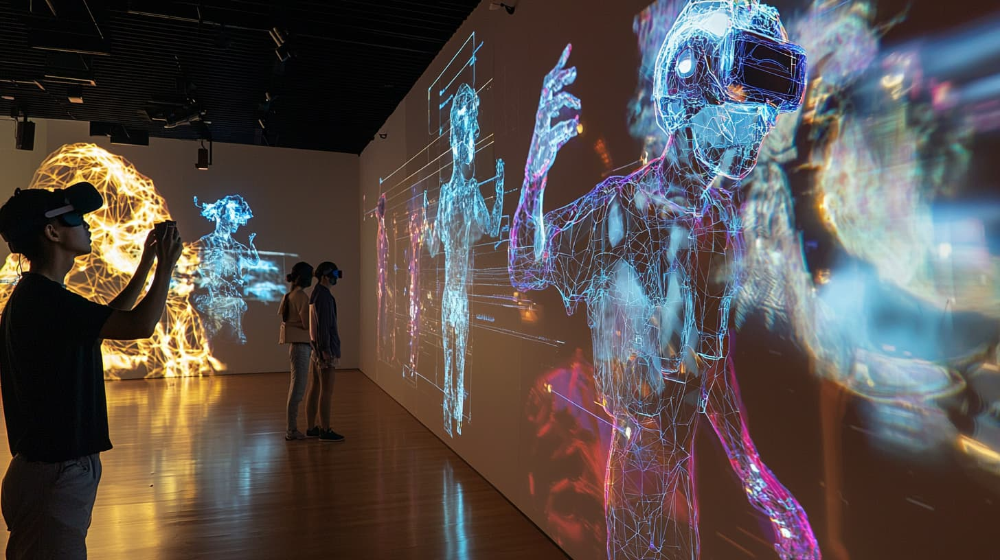
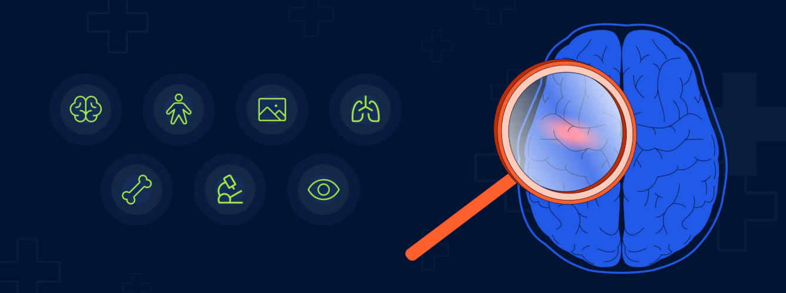
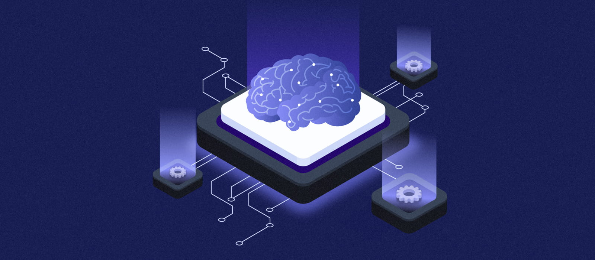

Samuel Diakolo
Manase
whoami
tout en nourrissant une passion grandissante pour le développement logiciel (C#, Go, Python, Bash, PowerShell)
que je pratique aussi bien en entreprise que sur mes projets personnels.
ps aux — processus actifs
- Installation et configuration de serveurs Linux et Windows Server
- Mise en place d'Active Directory, GPO, DNS, DHCP et serveur de fichiers
- Configuration réseau : VLAN, routage, ACL, Cisco, Stormshield
- Création et gestion de machines virtuelles avec Proxmox
- Mise en place de sauvegardes de VM et stockage distant
- Utilisation de Docker pour déployer des services conteneurisés
- Configuration de pare-feu avec UFW, iptables et Stormshield
- Mise en place d'outils de sécurité : Suricata, Fail2ban, Lynis
- Analyse réseau avec Wireshark et sensibilisation aux vulnérabilités web avec DVWA
- Installation et configuration de Nagios
- Mise en place de GLPI pour la gestion de tickets et du parc informatique
- Suivi des alertes, services et équipements réseau
- Automatisation avec Bash, PowerShell, Python
- Création d'interfaces graphiques avec PowerShell WinForms
- Bases en C#, Go, SQL, HTML, JSON et Node.js
- Utilisation de méthodes Scrum
- Réalisation de diagrammes de Gantt et PERT
- Organisation, planification et suivi de projets informatiques
git log --oneline --graph
ls -la ~/projets/
Description
Mise en place d'une infrastructure réseau complète avec segmentation par VLANs, déploiement de services en conteneurs et supervision des équipements réseau.
Stack technique
Réalisations
Configuration de la topologie réseau, déploiement des services critiques en haute disponibilité, mise en place de la supervision avec alertes configurées.
Compétences validées
Contexte
Conception d'une architecture réseau pour un établissement de santé : sécurisation des données patients, segmentation des flux, accès distants sécurisés.
Stack technique
Réalisations
Architecture multi-sites avec tunnels VPN site-à-site, segmentation des réseaux métier, conformité aux exigences de sécurité du domaine médical.
Compétences validées
Évolution
Version V2 avec automatisation du déploiement via Ansible et supervision avancée des équipements avec Grafana et Prometheus.
Stack technique
Réalisations
Playbooks Ansible pour déploiement automatisé, dashboards Grafana temps réel, alertes configurées sur métriques critiques, VMs Proxmox.
Compétences validées
Description
Jeu vidéo 2D en vue de dessus développé en C# avec un camarade de promotion. Principe de "touche-touche" : un joueur possède une bombe et doit toucher les autres avant qu'elle n'explose.
Stack technique
Fonctionnalités
Mode casual (points + timer) et mode mort subite (murs dynamiques, vitesse accrue, objets rares, bombe plus dangereuse). Menu principal, paramètres, tableau des scores, saisie de pseudos, objets bonus/malus aléatoires, écran de fin de partie.
Compétences mobilisées
cat cv.pdf
ls certifications/ -la
cat fiche-competences.pdf
tail -f /var/log/veille.log

WARN
INFO
WARN